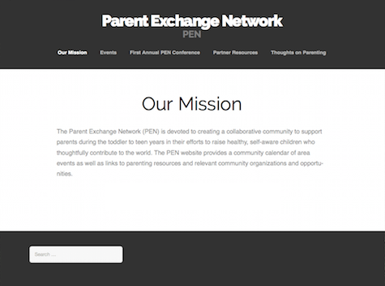
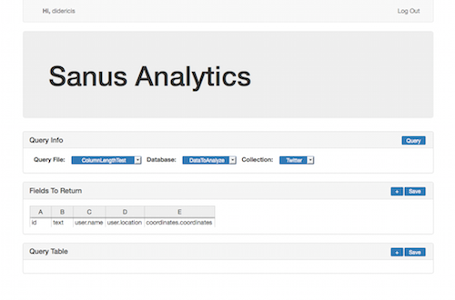

Resume
Parent Exchange Network
 Early in 2015, I designed and implemented the website for the Parent Exchange Network, a conference organizaion formed to help edulcate and support parents raising children from toddlers to teenagers. The website was done in wordpress, as the owners requested, and will launch once the organization is official. To visit, click here.
Sanus Analytics
 During the summer of 2014 I worked on a website for a friend in the Heathcare Industry. We were experimenting with an idea for a startup that involved analyzing social media data. To accomplish this, I created a node bot to suck up tweets in a few major cities over the period of a week. Mongodb was used to store the tweets. The website was private and allowed my friend and a statistitian to easily export data for analysis, neither of whom had experience with javascript or mongodb. An early, console based version of the export tool can be found here.
Other Work Experience
Computer SuperCenter of Greenwich (Summer 2013)
- Performed hardware repairs/diagnostics
- Performed software updates/installs
Internship at Assured Guaranty (Summer 2011)
- Scrubbed credit data in company databases
- Used Visual Basic to write search algorithms to find non-exact company name matches
EDUCATION
Norwalk Community College, Norwalk (2013-2015)
- Secretary of the Computer Science Club
- Completed networking track
Trinity College, Hartford (2010-2013)
- 2 years of computer science/engineering
- Wrote navigation software for the robotics club